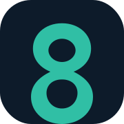

Airy fields, deliberate edges and a clear reading order replace visual clutter.
D8D Tech / provisional identity
Dawn Loop.
New chapter.
An original, restrained identity built around the Day Eight idea of a useful next chapter. Intended for owner review only; it is not a clearance, registration or public launch announcement.
Primary identity
Calm enough to hold a future story.
Primary / light field
Light-on-dark
One colour / production use
Compact lockup
Palette
Mineral, midnight, renewal.
INK#0D1B2A
NIGHT#071522
MINT#30BFA5
GOLD#E8B85C
PAPER#F5F6F3
PAPER WARM#ECEFE9
MINT PALE#D6F2EB
INK SOFT#344255
Type
Useful devices.
Ready for what’s next.
Georgia gives major messages a warm, considered cadence. A resilient system sans stack keeps interface language clear and direct without an external font request.
Mark at small size

Visual principles
Quiet confidence, not overstatement.
Loops, horizons and a limited dawn accent reference new beginnings without overt religious imagery.
No stock-product theatre, invented proof points or “green” claims. The brand stays clearly pre-launch.